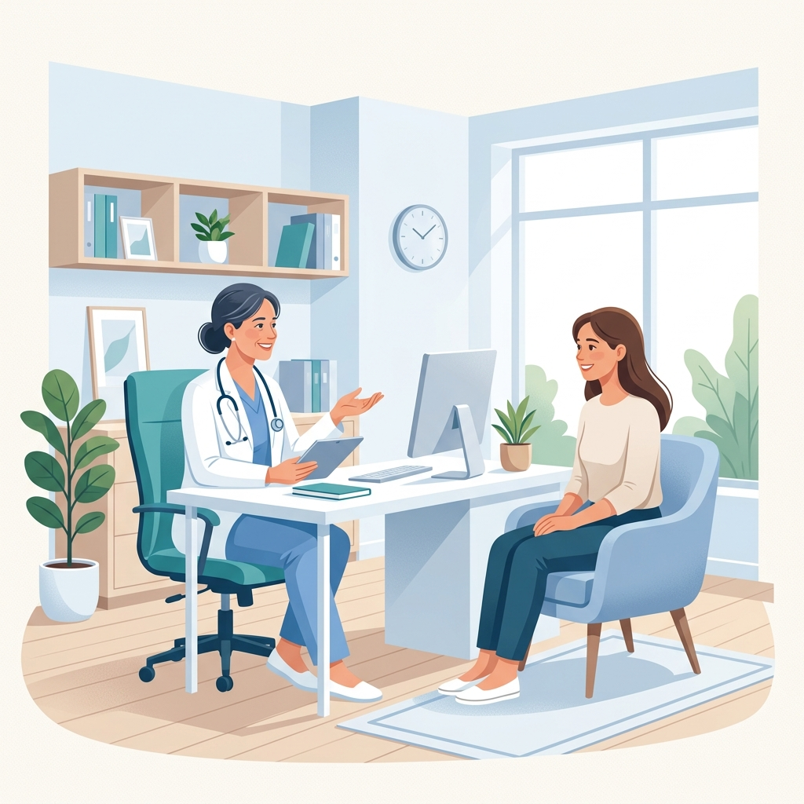
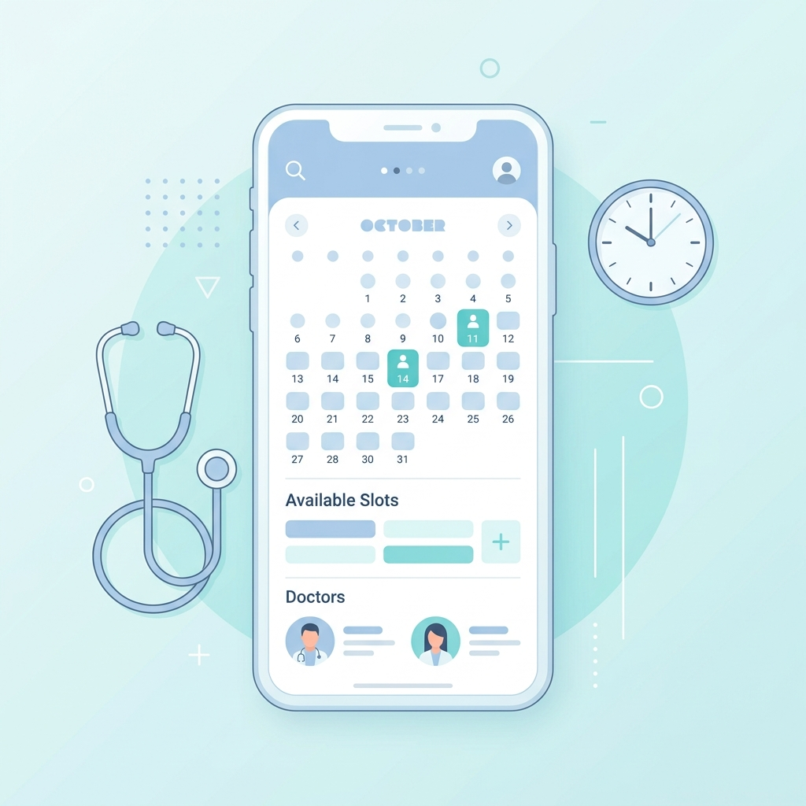

Les rôles et les responsabilités des médecins de famille au Québec
Une présentation pour le cours de français
Présenté par : Achintha IsuruQu'est-ce qu'un médecin de famille ?
- Un médecin de famille est un professionnel de la santé.
- Il soigne les patients de tous les âges (bébés, adultes, aînés).
- Il suit la santé des patients pendant plusieurs années.
- Il est souvent le premier contact dans le système de santé.

Les principales responsabilités
- Examiner les patients et évaluer les symptômes.
- Diagnostiquer des maladies courantes.
- Prescrire des médicaments (ordonnance).
- Donner des conseils sur la santé et le bien-être.
- Répondre aux questions des patients.
Exemple pratique
Si une personne a de la fièvre, une infection ou une douleur, elle consulte son médecin de famille.
1
Évaluation des symptômes
2
Diagnostic de la maladie
3
Prescription & conseils
La prévention et le suivi médical
- Administrer des vaccins essentiels.
- Faire des examens de routine (prises de sang, bilans).
- Conseiller une alimentation saine et équilibrée.
- Encourager l'activité physique régulière.
- Suivre les maladies chroniques comme le diabète.
Pourquoi est-ce important ?
La prévention peut aider à éviter certaines maladies graves avant qu'elles ne se développent.
Prévenir & Guérir
Les références aux spécialistes
Parfois, un patient a besoin d'un suivi plus pointu. Le médecin de famille le réfère alors à :
Sélectionnez un spécialiste pour découvrir son rôle de santé.
Le médecin de famille reste le coordinateur central des soins du patient.
Comment trouver un médecin de famille ?
- S'inscrire sur la liste d'attente du gouvernement (le Guichet d'accès à un médecin de famille).
- Chercher une clinique locale qui accepte de nouveaux patients.
- Utiliser une clinique sans rendez-vous en attendant d'être assigné.
Le Défi au Québec
Le temps d'attente sur la liste gouvernementale peut parfois être très long (plusieurs mois ou années).
Temps d'attente
Comment prendre un rendez-vous ?
Les patients peuvent réserver :
- Par téléphone, directement auprès de la clinique.
- En ligne (via des portails comme Clic Santé).
- Directement sur place à l'accueil de la clinique.
Avant le rendez-vous, n'oubliez pas :
D'apporter votre carte d'assurance maladie (carte Soleil), de préparer vos questions et d'arriver à l'heure.

Pourquoi sont-ils si importants ?
- Ils offrent des soins médicaux accessibles et de qualité.
- Ils assurent un suivi régulier et connaissent l'historique du patient.
- Ils aident à prévenir et intercepter les maladies précocement.
- Ils orientent efficacement les patients vers les bons spécialistes.
- Ils contribuent activement à la santé globale de la population du Québec.
Santé Communautaire
Conclusion
- Les médecins de famille jouent un rôle essentiel dans le système de santé québécois.
- Ils soignent, conseillent et accompagnent les patients tout au long de leur vie.
- Ils contribuent grandement au bien-être de la population.
Merci de votre attention !
Avez-vous des questions ?
Questions / Réponses
1 / 9